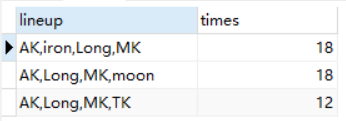

List the dept_name and buildings of all departments;
1
SELECT dept_name, building FROM department;
List the instructor’s name appears in the table instructor;
1 2
SELECT ALL name FROM instructor;
List the instructor‘s name whose salary is more than 90000 and dept_nameis ’Comp. Sci.’ ;
1 2 3
SELECT name FROM instructor WHERE salary > 90000 AND dept_name = 'Comp. Sci.';
List the instructor’s all information after we gave a 10% raise to each instructor;
1 2
SELECT ID, name, dept_name, salary * 1.1 FROM instructor;
Show the different dept_name in the table instructor;
1 2
SELECT DISTINCT dept_name FROM instructor;
List the course’s title ,dept_name,and credits which prerep_id is ‘130’;
1 2 3
SELECT title,dept_name,credits FROM course,prereq WHERE course.course_id=prereq.course_id AND prereq.prereq_id='130';
Find the titles of courses in the ‘Comp. Sci.’ department the have 3 credits;
1 2 3
SELECT title FROM course WHERE dept_name='Comp. Sci.' AND credits=3;
List the course_id which prereq_id is ‘130’;
1 2 3
SELECT course_id FROM prereq WHERE prereq_id='130';
Find all courses that were taught at least three times from 2008 to 2010;
1 2 3 4 5
SELECT title FROM section,course WHERE year BETWEEN 2008 AND 2010 AND section.course_id=course.course_id GROUP BY section.course_id HAVING COUNT(section.course_id)>=3;
Find the instructor names and the course name they taught for all instructors in Biology department who have taught some courses；
查找生物系所有教过至少一门课程的教员的教员姓名和所教的课程名；
1 2 3 4 5 6 7 8 9 10
SELECT name,title FROM teaches NATURAL JOIN instructor JOIN course USING(course_id) WHERE name IN ( SELECT name FROM teaches NATURAL JOIN instructor WHERE instructor.dept_name='Biology' GROUP BY name HAVING COUNT(name)>1 );
List all courses taught in Fall 2009;
1 2 3
SELECT * FROM course NATURAL JOIN teaches WHERE semester='FALL' AND year=2009;
Find the set of all courses taught either in Fall 2010 or in Spring 2009,or both.
1 2 3 4 5 6 7
(SELECT course_id, title FROM section NATURAL JOIN course WHERE semester='FALL' AND year=2010) UNION (SELECT course_id, title FROM section NATURAL JOIN course WHERE semester='Spring' AND year=2009);
Find all courses taught in the Fall 2009 but not in the Spring 2008;
1 2 3 4 5 6 7 8
SELECT * FROM section WHERE year=2009 AND semester='Fall' AND course_id NOT IN( SELECT course_id FROM section WHERE year=2010 AND semester='Spring' );
Find the average salary of instructors in the ‘Comp. Sci.’ department;
1 2 3
SELECT AVG(salary) FROM instructor WHERE dept_name='Comp. Sci.';
Find the total number of instructors who teach a course in the Spring 2010 semester;
1 2 3
SELECT COUNT(DISTINCT ID) FROM teaches WHERE year=2010 AND semester='Spring';
Find the number of tuples in the course relation;
1 2
SELECT COUNT(*) FROM course;
Find the average salary in each department;
1 2 3
SELECT dept_name,AVG(salary) FROM instructor GROUP BY dept_name;
Find the average salary of instructors in those departments where the average salary is more than 80000;
1 2 3 4
SELECT dept_name,AVG(salary) FROM instructor GROUP BY dept_name HAVING AVG(salary) > 80000;
Find the names of all instructors whose salary is greater than at least one instructor in the ‘Comp. Sci. ‘ department.
1 2 3 4 5 6
SELECT name FROM instructor WHERE salary > SOME ( SELECT salary FROM instructor WHERE dept_name='Comp. Sci.');
Project 2
查询每一个战队的人员数量，并根据人员数降序排序，若人员数相同，按照队名字典序排序
1 2 3 4
SELECT team, COUNT(player_name) as num_players FROM player GROUP BY team ORDER BY num_players DESC, team ASC;
列举出每个战队的成员，成员间用逗号分隔。根据队名字典序排序
1 2 3 4
SELECT team, GROUP_CONCAT(player_name) as members FROM player GROUP BY team ORDER BY team ASC;
统计选手Alex使用的所有角色次数，并降序排列
1 2 3 4 5
SELECT record_role,COUNT(record_role) AS times FROM record WHERE record_player = 'Alex' GROUP BY record_role ORDER BY times DESC;
查看最喜欢使用角色为雕刻家的前五位选手及其使用次数
1 2 3 4 5 6
SELECT record_player,record_role AS role,COUNT(record_player) AS times FROM record WHERE record_role = '雕刻家' GROUP BY record_player ORDER BY times DESC, record_player ASC LIMIT 5;
统计所有监管者的上场次数，并降序排列
1 2 3 4 5
SELECT record_role, COUNT(record_role) AS times FROM record WHERE identifier = 4 GROUP BY record_role ORDER BY times DESC;
SELECT ROUND(AVG(heals_or_terror_shocks),2) AS avg, COUNT(record_player) AS total, record_player FROM record WHERE identifier = 4 GROUP BY record_player HAVING total > 5 ORDER BY avg DESC;
查看FPX.ZQ的求生者阵容(4人为一个阵容)以及出场次数，阵容以逗号分隔
1 2 3 4 5 6 7 8 9 10 11 12 13 14
SELECT temp.lineup_temp AS lineup,COUNT(temp.lineup_temp) AS times FROM ( SELECT DISTINCT GROUP_CONCAT(r.record_player ORDER BY r.record_player ASC) AS lineup_temp, r.record_half_id FROM record AS r, player AS p WHERE r.record_player = p.player_name AND p.team = 'FPX.ZQ' AND r.identifier <> 4 GROUP BY r.record_half_id ) AS temp GROUP BY temp.lineup_temp;

根据监管者的胜率降序排序，以百分比的形式显示
1 2 3 4 5 6 7 8 9 10 11 12 13 14 15
SELECT CONCAT(ROUND(win/total*100,0),'%') AS ratio, record_player FROM ( SELECT record_player, COUNT(record_player) AS total FROM record WHERE identifier = 4 GROUP BY record_player ) AS r1 NATURAL JOIN ( SELECT record_player, COUNT(record_player) AS win FROM record WHERE identifier = 4 AND escape_or_eliminate > 2 GROUP BY record_player ) AS r2 ORDER BY ratio+0 DESC;
SELECT total.team FROM ( SELECT DISTINCT team FROM player )AS total LEFT JOIN ( SELECT DISTINCT * FROM ( SELECT CASE WHEN (m.away = 'FPX.ZQ' AND m.winner = 'FPX.ZQ') THEN m.home WHEN (m.home = 'FPX.ZQ' AND m.winner = 'FPX.ZQ') THEN m.away ELSE NULL END AS winner FROM `match` AS m )AS temp WHERE temp.winner IS NOT NULL ) AS won ON total.team = won.winner WHERE won.winner IS NULL
查询Wolves主场客场都战胜的队
1 2 3 4 5 6 7 8 9 10 11 12 13 14
SELECT win_home.winner FROM ( SELECT home AS winner FROM `match` WHERE away = 'Wolves' AND winner = 'Wolves' )AS win_home INNER JOIN ( SELECT away AS winner FROM `match` WHERE home = 'Wolves' AND winner = 'Wolves' )AS win_away ON win_home.winner = win_away.winner
统计在第一轮(sequence=0)中求生者被禁用次数，并根据次数降序排列
1 2 3 4 5 6 7 8 9 10 11 12 13 14 15
SELECT ban.bp_role_name AS role, COUNT(ban.bp_role_name) AS ban_times FROM half JOIN ban_pick AS ban ON half.half_id = ban.bp_half_id JOIN round ON half.half_round_id = round.round_id WHERE ban.bp_role_name IN ( SELECT role_name FROM role WHERE survivor = 1 ) AND round.sequence = 0 GROUP BY ban.bp_role_name ORDER BY ban_times DESC
SELECT re.record_player, re.record_role, r.map, re.escape_or_eliminate FROM `match` AS m JOIN round AS r ON m.match_id = r.round_match_id JOIN half AS h ON r.round_id = h.half_round_id JOIN record AS re ON h.half_id = re.record_half_id WHERE m.away = 'DOU5' AND m.home = 'Gr' AND r.sequence = 1 AND h.`first` = 1
SELECT SUM(r.escape_or_eliminate) AS escape_num, m.home, m.away, m.date, CONCAT('Round',ro.sequence+1) AS round FROM player AS p JOIN record AS r ON p.player_name = r.record_player JOIN half AS h ON r.record_half_id = h.half_id JOIN round AS ro ON h.half_round_id = ro.round_id JOIN `match` AS m ON ro.round_match_id = m.match_id WHERE p.team = 'Wolves' AND r.survivor = 1 GROUP BY(ro.round_id) ORDER BY m.date, round
SELECT SUM(r.escape_or_eliminate) AS escape_num, m.home, m.away, m.date, CONCAT('Round',ro.sequence+1) AS round FROM player AS p JOIN record AS r ON p.player_name = r.record_player JOIN half AS h ON r.record_half_id = h.half_id JOIN round AS ro ON h.half_round_id = ro.round_id JOIN `match` AS m ON ro.round_match_id = m.match_id WHERE p.team = 'DOU5' AND r.survivor = 0 GROUP BY(ro.round_id) ORDER BY m.date, round
查询监管者选手yan的得分情况。按照时间和轮次升序排序，截图只保留前10行
1 2 3 4 5 6 7 8 9 10 11 12 13 14 15 16 17
SELECT IF(r.escape_or_eliminate = 4,5,r.escape_or_eliminate) AS score, m.home, m.away, m.date, CONCAT('Round',ro.sequence+1) AS round FROM player AS p JOIN record AS r ON p.player_name = r.record_player JOIN half AS h ON r.record_half_id = h.half_id JOIN round AS ro ON h.half_round_id = ro.round_id JOIN `match` AS m ON ro.round_match_id = m.match_id WHERE p.player_name = 'yan' AND r.survivor = 0 GROUP BY ro.round_id, date
查询所有未和监管者gy交手的求生者及其战队，根据战队名字典序排序
1 2 3 4 5 6 7 8 9 10 11 12 13 14 15 16 17
SELECT A.player_name, A.team FROM player AS A LEFT JOIN ( SELECT record_player FROM record WHERE record_half_id IN ( SELECT r.record_half_id FROM player AS p JOIN record AS r ON p.player_name = r.record_player WHERE p.player_name = 'gy' AND r.survivor = 0 ) AND survivor = 1 )AS B ON A.player_name = B.record_player WHERE B.record_player IS NULL ORDER BY A.team ASC, A.player_name ASC
查询Wolves战队不同选图的胜率情况
1 2 3 4 5 6 7 8 9 10 11 12 13 14 15 16
SELECT t1.win_time/t2.total_time AS ratio, t1.map FROM ( SELECT r.map, COUNT(map) AS win_time FROM `match` AS m JOIN round AS r ON m.match_id = r.round_match_id WHERE (m.home = 'Wolves' AND r.home_big_point = 1) OR (m.away = 'Wolves' AND r.away_big_point = 1) GROUP BY map ) AS t1 JOIN ( SELECT r.map, COUNT(map) AS total_time FROM `match` AS m JOIN round AS r ON m.match_id = r.round_match_id WHERE m.away = 'Wolves' OR m.home = 'Wolves' GROUP BY map ) AS t2 ON t1.map = t2.map
SELECT t_cnt.cnt, t_cnt.winner, t_net.net FROM ( SELECT winner, SUM(net) AS net FROM ( SELECT m.winner, CASE WHEN (SUM(r.away_big_point) >= SUM(r.home_big_point)) THEN SUM(r.away_big_point) ELSE SUM(r.home_big_point) END AS net FROM round AS r JOIN `match` AS m ON r.round_match_id = m.match_id GROUP BY r.round_match_id, m.winner )AS t1 GROUP BY winner ) AS t_net JOIN ( SELECT winner, COUNT(winner) AS cnt FROM ( SELECT m.winner FROM `match` AS m JOIN round AS r ON m.match_id = r.round_match_id GROUP BY m.match_id, m.winner )AS t1 GROUP BY winner ) AS t_cnt ON t_cnt.winner = t_net.winner ORDER BY t_cnt.cnt DESC, t_net.net DESC
统计所有求生者的四人逃脱、三人逃脱、二人逃脱、一人逃脱和无人逃脱局数
1 2 3 4
SELECT 4-r.escape_or_eliminate AS escape, COUNT(r.escape_or_eliminate) AS cnt FROM record as r WHERE r.survivor = 0 GROUP BY r.escape_or_eliminate
SELECT t_win.net+t_lose.net AS net_rating, t_win.winner AS team FROM ( SELECT winner, SUM(net) AS net FROM ( SELECT m.winner, CASE WHEN (SUM(r.away_big_point) >= SUM(r.home_big_point)) THEN SUM(r.away_big_point) ELSE SUM(r.home_big_point) END AS net FROM round AS r JOIN `match` AS m ON r.round_match_id = m.match_id GROUP BY r.round_match_id, m.winner )AS t1 GROUP BY winner ) AS t_win JOIN ( SELECT loser, SUM(net) AS net FROM ( SELECT CASE WHEN m.away = m.winner THEN m.home ELSE m.away END AS loser, CASE WHEN (SUM(r.away_big_point) <= SUM(r.home_big_point)) THEN SUM(r.away_big_point) ELSE SUM(r.home_big_point) END AS net FROM round AS r JOIN `match` AS m ON r.round_match_id = m.match_id GROUP BY r.round_match_id )AS t1 GROUP BY loser ) AS t_lose ON t_win.winner = t_lose.loser ORDER BY net_rating DESC
查询比赛胜者净胜分为2分且无平局记录的对战及获胜战队
1 2 3 4 5 6
SELECT m.home, m.away, m.winner, m.date FROM round AS r JOIN `match` AS m ON r.round_match_id = m.match_id GROUP BY r.round_match_id, m.winner HAVING COUNT(r.round_id) = 2
-- 净胜分为2分且无平局的情况：两轮全胜
查询选手DongX在哪几场比赛中胜平率为100%
1 2 3 4 5 6 7 8 9 10 11 12 13
SELECT m.home, m.away, m.date FROM player AS p JOIN record AS r ON p.player_name = r.record_player JOIN half AS h ON r.record_half_id = h.half_id JOIN round AS ro ON h.half_round_id = ro.round_id JOIN `match` AS m ON ro.round_match_id = m.match_id WHERE r.record_player = 'DongX' AND m.winner = p.team GROUP BY m.match_id HAVING MIN(r.escape_or_eliminate) >=2